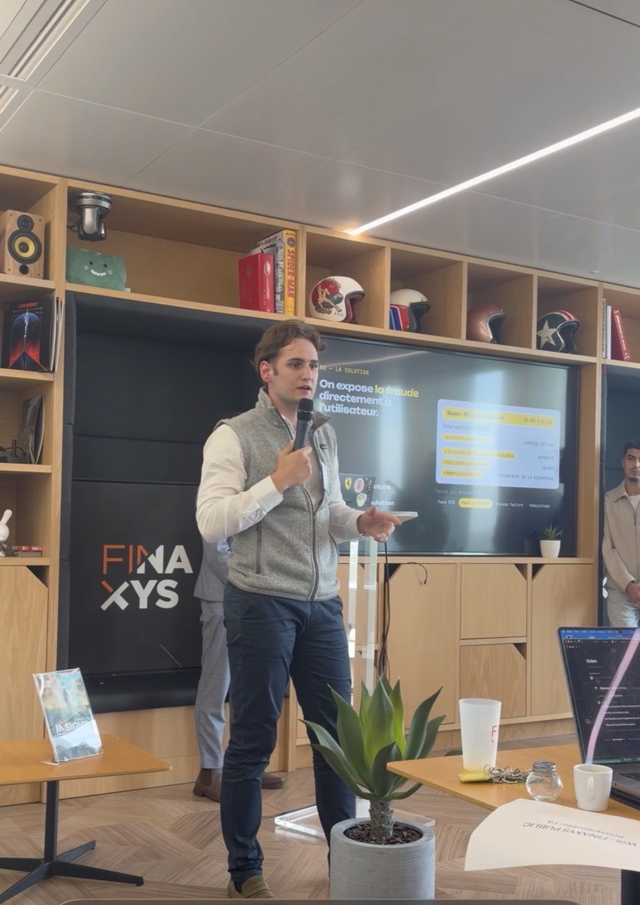

Développeur • Data • IA
42 Paris, Python, C, Shell, Git, data engineering, IA appliquée, hackathons et construction de produits utiles.
Portfolio interactif
Développeur • Data • IA • Finance • Business
Un profil hybride entre technologie, analyse, finance, communication et performance.
À propos
Je suis étudiant à ICN Business School & 42 Paris, avec un profil hybride mêlant développement, data, intelligence artificielle, finance, business et prise de parole.
J’aime transformer des idées en projets concrets : concevoir, tester, présenter et faire évoluer des solutions utiles.
Mes 3 facettes
42 Paris, Python, C, Shell, Git, data engineering, IA appliquée, hackathons et construction de produits utiles.
ICN Business School, finance & contrôle, analyse, admissions, coordination, relation humaine et compréhension business.
Une facette en construction : prise de parole, image publique, création de contenu et présence à venir sur les réseaux sociaux.
Parcours
PGE — Spécialisation en Finance & Contrôle.
Informatique — Top 10 %, C, Shell, algorithmique et Python.
Échange universitaire au Brésil : stratégie, management de l’innovation, entrepreneuriat, conception organisationnelle et portugais.
Expériences & engagements
Assistant Pilotage Financier | Fonds européens — Stage
Développement d’une macro Excel pour automatiser le traitement des CSF et fiabiliser l’extraction des données financières.
Assistant admissions — Stage
Réalisation d’entretiens d’admission avec des candidats nationaux et internationaux et émission d’attestations d’inscription pour différents campus.
Vice-président
Coordination locale des actions associatives entre les campus de Paris et Nancy et garantie de la cohérence des projets sur plusieurs sites.
Bénévole
Engagement associatif dans l’aide humanitaire.
Projets
Hackathon • FINAXYS × Mistral AI
Prototype de solution de vigilance contre les fraudes par e-mail, développé en équipe lors d’un hackathon. Mon rôle : création, tests et présentation (speech), aux côtés de mon groupe.

Finance • Challenge
Gestion de portefeuille et mise en pratique d’une logique d’analyse et de décision dans un contexte financier.
Certifications & distinctions
Yale University
Émise en octobre 2026
ID : Z2IX6VKNSQ48
VérifierCorporate Finance Institute
Émise en septembre 2026
ID : 3RF9BTGAFSVJ
Spécialisation en analyse de données pour Excel.
Distinction sportive
CBJJE
Moments forts
Contact
Le CV public téléchargeable sera ajouté dès qu’il sera prêt.
Bientôt sur les réseaux
Une présence en ligne en construction autour de la tech, du business, des hackathons et de mon parcours personnel.